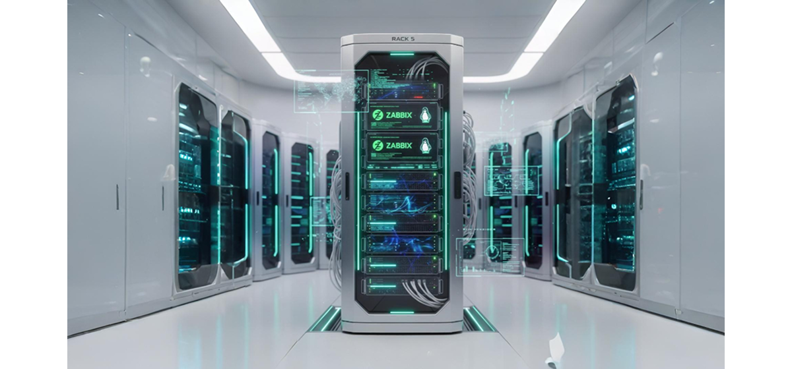

Imagina um servidor central que é o coração da rede.
O que o Rack 05 faz? O Rack 05 é o centro de operações que:
Exemplo prático:
Em resumo: O Rack 05 é um serviço Microsoft que funciona como:
Ele é basicamente uma "caixa" ou painel onde os cabos de fibra que vêm da rua ou de outros andares (chamados de backbone) chegam e são conectados aos equipamentos ativos da rede (como switches, roteadores ou conversores de mídia).
Ele é um equipamento de hardware que conecta vários dispositivos (computadores, impressoras, servidores, câmeras IP) dentro de uma mesma rede (LAN), permitindo que eles conversem entre si de forma eficiente.
O Monitor KVM é um dispositivo que integra teclado, vídeo e mouse em uma única estrutura. Ele permite controlar vários servidores a partir de um único console, economizando espaço e facilitando a gestão.
Um servidor é um computador mas diferente do seu computador pessoal (onde você joga, digita textos ou navega na internet), o trabalho do servidor não é atender a uma pessoa sentada na frente dele. O trabalho dele é atender (servir) outros computadores.
O Patch Panel é um painel passivo (não usa energia) cheio de portas de rede (RJ45), que serve como um ponto intermediário entre os cabos que vêm das paredes e o Switch.